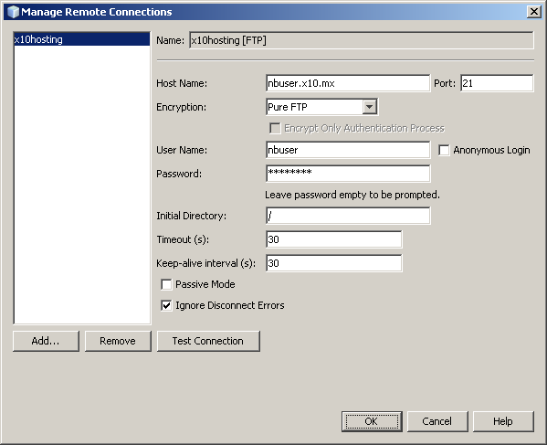

Implantando um aplicativo PHP em um servidor Web remoto utilizando o NetBeans IDE
Normalmente, um aplicativo PHP real é executado em um servidor remoto. Aplicativos remotos são acessados por um sistema de controle de versão ou por um Protocolo de Transferência de Arquivo (FTP).
Cuidado: NetBeans suporta FTP/SFTP básico, o suficiente para um desenvolvedor trabalhar em um projeto simples. Se estiver trabalhando em um projeto complexo com diversos desenvolvedores, é importante usar um sistema de controle de versão. O NetBeans IDE suporta uma série de sistemas de controle de versão. Consulte nossos tutoriais Subversion e Git, por exemplo. Se for necessário o uso de FTP/SFTP com um projeto complexo, considere usar o IDE em conjunto com um cliente de FTP completo e edite o projeto PHP no IDE como um site local.
JDK 7 + Windows 7/Vista: o firewall do Windows 7 e o Windows Vista bloqueia algumas operações do FTP que são iniciadas pelo JDK 7. Consulte o fórum NetBeans para solução desse problema.
Para implantar o aplicativo PHP em um servidor remoto, você precisará registrar uma conta em um provedor de hospedagem. Você também pode fazer o deployment de um banco de dados MySQL no servidor remoto onde você tenha uma conta de hospedagem.
Todos os nomes de usuário, senhas e endereços de email são fictícios e utilizados somente como exemplos. A administração da hospedagem bloqueia uma conta se o usuário não aparecer no fórum por mais de uma semana. Assim, você pode falhar em aplicar exatamente os mesmos nomes de usuário, senhas, endereços de email e outras credenciais do tutorial.
Conteúdo
 O conteúdo desta página se aplica ao NetBeans IDE 6.9-7.0" title="
O conteúdo desta página se aplica ao NetBeans IDE 6.9-7.0" title="
Para seguir este tutorial, você precisa dos seguintes recursos e softwares.
| NetBeans IDE |
Pacote de download do PHP |
| Um mecanismo PHP |
Versão 5
|
Uma conta de hospedagem e
uma conta FTP em um servidor remoto |
Por exemplo, x10Hosting
fornece hospedagem em conta FTP gratuita. |
| Um depurador do PHP (opcional) |
XDebug 2.0 ou posterior |
Definindo a configuração de execução para projetos PHP a serem hospedados remotamente
Se você possuir uma conta de hospedagem em um servidor Web remoto e uma conta FTP para transferir os arquivos de código-fonte para o servidor remoto, é possível criar e depurar o seu projeto PHP localmente e, em seguida, implantar no servidor remoto. Com o conceito de Configuração de execução, você pode alternar entre esses fluxos de trabalho no mesmo projeto NetBeans PHP alterando o tipo de Configuração de execução de Site Local para Site Remoto.
Para habilitar a execução de um aplicativo PHP em um servidor remoto, você precisa definir uma configuração de execução que contenha um perfil de conexão FTP.
Se você já tiver um projeto com uma configuração de execução padrão e desejar adicionar uma nova configuração de execução remota, personalize o seu projeto:
- Clique com o botão direito do mouse no nó do projeto e escolha Propriedades do menu pop-up. O painel Propriedades do projeto é aberto.
- Na lista Categorias, escolha Configuração de execução. O painel Configuração de execução se abre.
- Escolha o tipo de configuração de execução e especifique as configurações de conexão (S)FTP conforme descrito nas seções abaixo.
Para criar um projeto NetBeans para um aplicativo PHP em um servidor remoto ou para criar um novo projeto que utilize uma configuração de execução remota como padrão:
- Inicie o IDE, escolha Arquivo -> Novo projeto. O painel Novo projeto se abre.
- Em Categorias, escolha PHP e, em Servidor remoto, Aplicativo PHP. Em seguida clique em Próximo. O painel Nome e localização é aberto.
- Especifique o nome do projeto, o local dos arquivos de código-fonte do aplicativo e o local dos arquivos internos do projeto (opcional). Clique em Próximo. O painel Configuração de execução se abre.
- Especifique as configurações da conexão FTP conforme descrito na seção abaixo.
Escolhendo o tipo de configuração de execução
No painel Configuração de execução, escolha Website remoto (FTP, SFTP) na lista suspensa Executar como. A área oculta para definir a configuração é exibida.
Se estiver criando um novo projeto com o aplicativo PHP de um assistente de servidor remoto, não é necessário selecionar “Executar como” da lista suspensa. O assistente automaticamente indica o painel de conexão remota. Esse painel só tem os campos URL do projeto, Conexões remotas e Carregar diretórios.

Especificando as configurações da conexão (S)FTP
Para criar uma conexão FTP:
- Clique em Gerenciar ao lado da lista suspensa Conexão FTP. A caixa de diálogo Gerenciar conexões remotas é exibida.
- Clique em Adicionar. A caixa de diálogo Criar nova conexão é aberta. (Ela pode se abrir automaticamente caso você esteja definindo sua primeira conexão.)
- No campo Nome da conexão, indique o nome da nova conexão. Neste exemplo, o nome da conexão é x10hosting. Na lista suspensa Tipo, escolha FTP ou SFTP. Clique em OK. A caixa de diálogo Gerenciar conexões remotas é exibida com o nome da nova conexão no campo de exibição Nome da conexão.
- No campo Nome da máquina, indique o nome do servidor FTP conforme está escrito na mensagem de confirmação da criação da conta FTP. Neste exemplo, o servidor FTP é nbuser.x10.mx.
- No campo Porta, especifique 21.
- No campo Nome de usuário, insira seu nome de usuário FTP conforme está escrito na mensagem de confirmação da criação da conta FTP. Neste exemplo, o nome de usuário do FTP nbuser.
- Preencha o campo Senha. Neste exemplo, a senha é qwerty1234.
- No campo Diretório inicial, insira o nome do diretório da conta no servidor FTP. Neste exemplo, não há um diretório de conta especificado, insira uma barra no campo.

- Clique em OK. Você retorna para o painel Configuração de execução.
- No campo Diretório de carregamento, insira o nome da subpasta no diretório inicial onde os arquivos de código-fonte serão carregados. O aviso abaixo do campo mostra a URL do host FTP.
- Para concluir a configuração de um novo projeto, clique em Finalizar.
Carregando os arquivos de código-fonte em um servidor remoto
Após você escolher a conexão remota para seu projeto, selecione se deseja carregar seus arquivos de código-fonte na execução, ao salvar ou manualmente.
- Ao executar: os arquivos de código-fonte são carregados no servidor quando o projeto é executado.
- Ao salvar: qualquer alteração (criar, editar, renomear, excluir) é imediatamente propagada para seu servidor remoto. Se a operação levar mais de 1 segundo, uma barra de andamento é mostrada.
- Manualmente: os arquivos nunca são carregados automaticamente. É preciso utilizar a função manual de carregar do IDE, descrita nesta seção.

Para carregar manualmente os arquivos do seu projeto para o servidor FTP, clique com o botão direito do mouse no nó Arquivos de código-fonte do seu projeto e selecione Carregar. Observe que você também pode baixar arquivos do servidor FTP no mesmo menu.

Ao iniciar os arquivos de carregamento, uma caixa de diálogo abre com uma visualização em árvore dos arquivos de código fonte. Nesta caixa de diálogo, é possível selecionar arquivos individuais para carregar ou não carregar. Para mais informações, consulte a entrada do blog NetBeans PHP na caixa de diálogo Carregamento do arquivo.

Ao carregas os arquivos, os resultados do carregamento aparece em uma aba de saída.

Executando um aplicativo PHP
Para executar um aplicativo PHP em um servidor remoto:
- No painel Propriedades, certifique-se de que o Site remoto esteja selecionado na lista suspensa Executar como.
- Verifique as definições em Configuração de execução.
- Se o projeto estiver definido como principal, clique no
 na barra de ferramentas.
na barra de ferramentas.
- Se o projeto não estiver definido como principal, posicione o cursor no nó do projeto e escolha Executar do menu pop-up.
Usando um banco de dados MySQL remoto
Os serviços de hospedagem remota como o x10Hosting.com geralmente permitem que você configure um banco de dados MySQL em seus servidores. É possível criar bancos de dados, gerenciar usuários e copiar, ler, atualizar ou excluir (CRUD) dados com as ferramentas fornecidas pelo serviço de hospedagem remota.
Por exemplo, se você estiver utilizando o x10Hosting.com, crie um banco de dados MySQL efetuando logon no painel do x10Hosting e depois abrindo o painel do banco de dados MySQL. Você também pode criar usuários, atribuir usuários a bancos de dados e conceder privilégios a usuários no painel de bancos de dados MySQL. É possível então utilizar as ferramentas CRUD no painel phpMyAdmin.
Uma alternativa para trabalhar com ferramentas CRUD de bancos de dados remoto é utilizar os recursos CRUD do NetBeans IDE para trabalhar com um banco de dados local. Depois, você poderá copiar ou despejar o banco de dados local no banco de dados remoto. No x10Hosting.com, você pode utilizar o painel phpMyAdmin para carregar o banco de dados local.
Para enviar comentários e sugestões, obter suporte e manter-se informado sobre os desenvolvimentos mais recentes dos recursos de desenvolvimento em PHP no NetBeans IDE, junte-se à lista de usuários users@php.netbeans.org.
Voltar à trilha do aprendizado